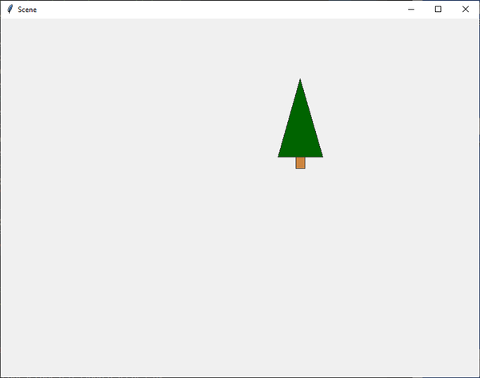

05 Prove Milestone: Writing Functions
Overview
Prove that you can write functions with parameters and call those functions with arguments by writing a program that draws an outdoor scene in a window.
Problem Statement
Most modern computer operating systems have graphical user interfaces (GUIs) that are rich with colors, icons, images, menus, tabs, buttons, text fields, sliders, scroll bars, etc. However, many Python programs are designed to run in a console window, also called a terminal window, to read user input from a keyboard, and to print text as output to the console window. This means that many Python programs are not designed and written to take advantage of the rich features of graphical user interfaces.
Python includes two competing libraries of code named
tkinter and kivy that enable a program to
have a user interface. Writing a program with a complete GUI is a
large task. During this lesson and the next lesson, you will write a
Python program that uses the tkinter library and
draws a semi-realistic scene in a graphical window similar to this
scene:

Helpful Videos
The following videos walk through two examples of using functions to draw with tkinter:
Helpful Documentation
A tutorial about drawing with tkinter
References for tkinter Canvas methods:
- Chart of named colors in tkinter
Assignment
During this lesson, you will write code that draws the sky, the ground, and clouds. During the next lesson, you will write code that completes the scene. The scene that your program draws may be very different from the example scene above. However, your scene must be outdoor, the sky must have clouds, and the scene must include repetitive elements such as blades of grass, trees, leaves on a tree, birds, flowers, insects, fish, pickets in a fence, dashed lines on a road, buildings, bales of hay, snowmen, snowflakes, or icicles. Be creative.
Each repetitive element must be drawn by a function that your
program calls repeatedly, once for each repeated element. For
example, your program may include a function named
draw_leaf that your program repeatedly calls to draw
all the leaves on a tree.
The goal of this assignment is not to train you to become a world-famous cloud artist. Instead, the goal is to teach you how to apply the following principles to a real programming problem:
Writing a function
Deciding what needs to be a parameter in a function definition
Calling a function with different argument values to produce different results
Understanding how to separate the parts of a function that should stay the same and the parts that depend on parameters, in order to make the function as reusable as possible.
Begin your program by copying and pasting the following code into
a new file named scene.py. This beginning code imports
several parts of the tkinter library and creates a
window and a canvas that your program can draw to.
from tkinter import Tk, Frame, Canvas, BOTH
def main():
width = 800
height = 600
# Create the root Tk object.
root = Tk()
root.geometry(f"{width}x{height}")
# Create a Frame object.
frame = Frame()
frame.master.title("Scene")
frame.pack(fill=BOTH, expand=1)
# Create a canvas object that will draw into the frame.
canvas = Canvas(frame)
canvas.pack(fill=BOTH, expand=1)
# Call the draw_scene function.
draw_scene(canvas, 0, 0, width-1, height-1)
root.mainloop()
def draw_scene(canvas, scene_left, scene_top, scene_right, scene_bottom):
"""Draw a scene in the canvas. scene_left, scene_top,
scene_right, and scene_bottom contain the extent in
pixels of the region where the scene should be drawn.
param scene_left - left side of the region; less than scene_right
param scene_top - top of the region; less than scene_bottom
param scene_right - right side of the region
param scene_bottom - bottom of the region
If needed, the width and height of the
region can be calculated like this:
scene_width = scene_right - scene_left + 1
scene_height = scene_bottom - scene_top + 1
"""
# Call your functions here, such as draw_sky, draw_ground,
# draw_snowman, draw_tree, draw_shrub, etc.
# Define more functions here, like draw_sky, draw_ground,
# draw_cloud, draw_tree, draw_kite, draw_snowflake, etc.
# Call the main function so that
# this program will start executing.
main()Save your new file as scene.py and run your new
Python program. When you run it, you should see a blank white canvas appear.
The purpose of this assignment is to prove that you can write and
call functions. Therefore, your program must be divided into
functions such as draw_sky, draw_cloud,
draw_ground, draw_bird,
draw_grass_blade, and draw_insect. The
headers for the draw_scene and
draw_pine_tree functions are good examples for the
headers of all your draw_* functions. For example, if you write a
draw_grass_blade function in your program, you could
write its header like this:
def draw_grass_blade(canvas, blade_left, blade_top, blade_right, blade_bottom):Example
For example, this code draws the following image:

Testing Procedure
Verify that your program works correctly by following each step in this testing procedure:
- Run your program and verify that it correctly opens a window and draws within that window an outdoor scene that contains at least the sky, clouds, and the ground.
Submission
On or before the due date, return to I-Learn and report your progress on this milestone.